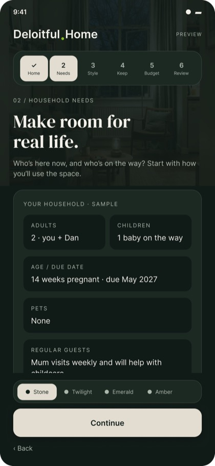
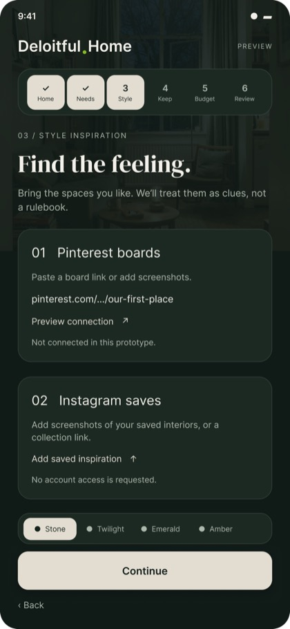

Deloitful.Home
A Home Furnishing Planner — StepChange Team 5
The problem
Furnishing a home is a trust fall.
You commit money, and sometimes months, before you really know
whether anything you're buying will fit your rooms, your family,
or your life.
Why today's tools don't help
Inspiration isn't a plan.
Visualise
Pinterest boards and showroom floors have no idea what your
actual rooms look like.
Needs & access
Accessibility is usually a filter you apply later, not a
foundation you plan from.
Budget & trust
Nothing connects a "vibe" to a costed, shoppable plan you can
actually trust.
The pitch
Home Furnishing Planner
Turn your household, your home, and your taste into a feasible,
visual, shoppable plan — before you spend a penny.
Function first, then the pretty picture: we recommend the
requirement before we recommend the product.
How it works
One flow, five steps.
→

Household & needs
→

Taste & inspiration
→
→
Why you can trust it
Hard constraints, not disclaimers.
- Accessibility is a hard constraint in the brief and layout
engine — not a styling option.
- Every inferred measurement is labelled as an estimate. We
never claim compliance.
- Every upload is untrusted until it's scanned, quarantined,
and sandboxed.
- Designed and tested mobile-first to WCAG 2.2 AA — 320px wide,
no horizontal scroll.
Enough talking
Let's look at it.
45 seconds.
Deloitful.Home
Now, the fun part
Built the same way we pitch it: time-boxed.
Four roles, one solution
Who did what
Product
Wrote the PRD: the user journeys, 91 functional
requirements, and the hard constraints.
Tech
Owns the platform: the monorepo, the app↔server
contract, and review of everything an agent produces.
Claude
Picked the stack against the PRD's constraints, and built it
in spec-driven, time-boxed agent waves.
Design
Shipped Figma prototypes — the screens we restyled against
the moment they landed.
The stack Claude chose
Picked against the constraints, not habit.
Next.js + Hono, one typed contract between them, on Vercel end to end.
How it actually got built
Spec, build, ship — on a clock, not a feature list.
- Every change starts as a written proposal, tied back to PRD
requirement IDs.
- Wave 1 built the API surface. Wave 2 restyled the UI against
Figma the moment it landed.
- Nothing ships without lint, typecheck, test and build passing
— every time.
The receipts
Fast, and honest about it.
~15,000
lines of TypeScript, hand-reviewed and
test-covered
91
functional requirements traced end to end
from the PRD
2
time-boxed agent build waves — API, then
UI
Live
test coverage & dependency reports,
published on every build
Why it matters
Three kinds of value, one build.
Deloitte value
A working, spec-driven, AI-assisted delivery model reviewers
can take straight back to client work.
Personal value
We shipped a full product end to end, working alongside an
AI teammate — not just prompting one.
Social value
A charity ledger is wired into the product's own economics:
every affiliate fee has a charity behind it.
Deloitful.Home
Help people see how a home could work for their life — before they
spend a penny on it.